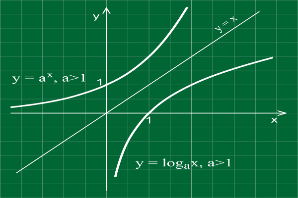
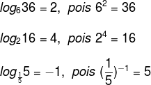
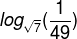
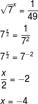

Historicamente o logaritmo surge a fim de facilitar contas que apareciam com frequência em diversas áreas cientificas. John Napier foi pioneiro nos estudos sobre logaritmos, e conseguiu desenvolver a operação capaz de transformar produtos em soma, divisões em subtrações e potências em multiplicações.
Definindo essa operação, com o tempo, outros matemáticos formalizaram definições e propriedades, além disso, foi desenvolvida também a conhecida tábua de logaritmos.
Esboço do gráfico da função logaritmo (à direita) e sua inversa exponencial (à esquerda).
Considere dois números reais positivos a e b, com a ≠ 0. O logaritmo de b na base a é o número x se, e somente se, a elevado a x for igual ao número b.
a → base
b → logaritmando
x → logaritmo
Veja os exemplos:

Quando um logaritmo possui a base igual a 10, esse é chamado logaritmo decimal. Ao registrar-se um logaritmo decimal, não é necessário escrever a base 10. É convencionado que:
Para calcular um logaritmo, temos que procurar um número que, quando elevamos a base, resulte no logaritmando. Pegando como exemplo o logaritmo de 36 na base 6 do exemplo anterior, devemos encontrar um número que, quando elevamos a base 6, resulte em 36. Como 62 = 36, sendo a resposta 2. Vejamos mais exemplos:
1) Log 1000. Para calcular esse logaritmo, devemos encontrar um número que, elevado a 10, seja igual a 1000, isto é, 10x = 1000.
Resolvendo a equação exponencial, temos:
10x =1000
10x = 103
x = 3
Portanto,
1.Calcule o logaritmo:

Devemos encontrar um número que, elevado à raiz de 7, seja igual a um quarenta e nove avos. Resolvendo a equação, temos:

Considere o logaritmo a seguir:
A expressão só está definida para quando a base for maior que zero e diferente de um e quando a base for maior que zero, ou seja:
a > 0 e a ≠ 0
b > 0
Video aula - Complementando seus conhecimentos
Teste suas habilidades adquiridas com o QUESTIONÁRIO.
Bons estudos!